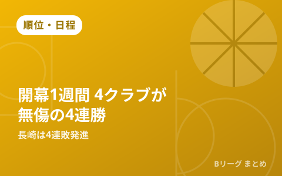

Bプレミア開幕1週間 群馬・広島・名古屋D・三遠が無傷の4連勝 昨季王者長崎は4連敗発進

10月5日、バスケットボールキングなど複数メディアが、9月22日に開幕した新リーグ「B.PREMIER（2026-27シーズン）」の開幕1週間（10月2日～4日）の結果をまとめて報じました。東地区は群馬クレインサンダーズが無傷の4連勝で単独首位に立ち、西地区は広島ドラゴンフライズ・名古屋ダイヤモンドドルフィンズ・三遠ネオフェニックスの3クラブが開幕4連勝をマーク。一方で、昨季B1王者の長崎ヴェルカは4連敗からのスタートとなっています。
東地区は群馬が単独首位、A東京は劇的な延長勝ちを含め3連勝
群馬クレインサンダーズは、10月3日に茨城ロボッツとの接戦を72-71で制すると、10月4日もホームのオープンハウスアリーナ太田で86-77と勝利。開幕から無傷の4連勝を飾り、東地区で唯一の未敗戦クラブとして単独首位に立ちました。追う東京サンロッカーズ、アルバルク東京、レバンガ北海道はいずれも3勝1敗で続いています。なかでもアルバルク東京は、10月3日の千葉ジェッツ戦でBリーグ史上2度目となる4度の延長（クアドラプルオーバータイム）の末に勝利するなど、接戦をものにしながら白星を重ねました（この一戦の詳細はこちらの記事で紹介しています）。
| クラブ（東地区） | 開幕からの成績 |
|---|---|
| 群馬クレインサンダーズ | 4勝0敗（単独首位） |
| 東京サンロッカーズ | 3勝1敗 |
| アルバルク東京 | 3勝1敗 |
| レバンガ北海道 | 3勝1敗 |
| 茨城ロボッツ | 0勝4敗 |
西地区は広島・名古屋D・三遠の3クラブが無傷の4連勝
西地区では、広島ドラゴンフライズが神戸ストークスとのホーム2連戦を10月2日に96-73、10月4日に83-72で連勝し、開幕4連勝を達成。名古屋ダイヤモンドドルフィンズも島根スサノオマジックとのアウェー2連戦を10月3日85-73、10月4日90-80で制し、同じく無傷の4連勝をマークしました（名古屋Dの直近の試合内容はこちらの記事で詳しく紹介しています）。三遠ネオフェニックスも佐賀バルーナーズとの2連戦を10月3日97-61、10月4日93-89で連勝し、西地区は3クラブが開幕4連勝で肩を並べる結果となりました。
| クラブ（西地区） | 開幕からの成績 |
|---|---|
| 広島ドラゴンフライズ | 4勝0敗 |
| 名古屋ダイヤモンドドルフィンズ | 4勝0敗 |
| 三遠ネオフェニックス | 4勝0敗 |
| 長崎ヴェルカ | 0勝4敗 |
昨季王者の長崎は厳しい開幕 4連敗でスタート
一方、昨季のB1王者である長崎ヴェルカは京都ハンナリーズなどに敗れ、開幕から4連敗とつまずくスタートになりました。新リーグ初年度の西地区は上位と下位の差が早くも開き始めており、今後の巻き返しに注目が集まります。
アルバルク東京は新加入オルブリッチが離脱 インジュアリーリストに登録
好調を維持するアルバルク東京には懸念材料も出ています。10月5日、クラブは新加入のラクラン・オルブリッチが左膝の内側側副靱帯損傷などの負傷を負ったと発表し、インジュアリーリスト（IL）に登録しました。開幕から主力として起用されてきた新戦力の離脱は、首位・群馬を追う東地区上位争いに影響を与える可能性があります。
Q. B.PREMIERの「地区」はどう分かれている？
A. 2026-27シーズンのB.PREMIERは東地区・西地区の2地区制で、合計26クラブが参加しています。新リーグ「B.革新」全体の概要はこちらの記事で整理しています。
出典：バスケットボールキング「【Bプレミア東地区結果まとめ】群馬が開幕4連勝で単独首位…4度の延長を制したA東京が3連勝で続く」／バスケットボールキング「【Bプレミア西地区結果まとめ】3クラブが開幕4連勝…昨季B1王者の長崎は4連敗スタート」／バスケットボールキング「好調なアルバルク東京に痛手…新戦力のラクラン・オルブリッチが左脚負傷しIL入り」ほか
https://basketballking.jp/news/japan/20261005/636098.html
https://basketballking.jp/news/japan/20261005/636111.html
https://basketballking.jp/news/japan/20261005/636156.html